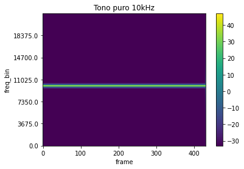
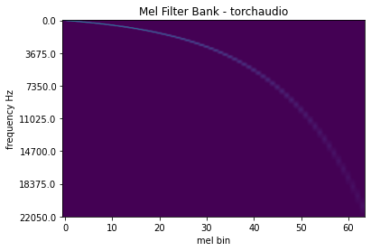
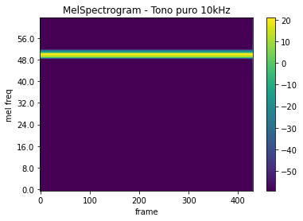

Espectrogramas de un tono puro
Contents
# We require to install the following packages:
# !pip install torchaudio librosa
import torch
import torchaudio
import torchaudio.functional as F
import torchaudio.transforms as T
print(torch.__version__)
print(torchaudio.__version__)
1.11.0
0.11.0
10. Espectrogramas de un tono puro#
import os
import librosa
import matplotlib.pyplot as plt
import requests
from IPython.display import Audio, display
def _fetch_data():
uri = [
(SAMPLE_WAV_SPEECH_URL, SAMPLE_WAV_SPEECH_PATH),
]
for url, path in uri:
with open(path, "wb") as file_:
file_.write(requests.get(url).content)
def _get_sample(path, resample=None):
effects = [["remix", "1"]]
if resample:
effects.extend(
[
["lowpass", f"{resample // 2}"],
["rate", f"{resample}"],
]
)
return torchaudio.sox_effects.apply_effects_file(path, effects=effects)
def get_speech_sample(audio_path='', resample=None):
return _get_sample(audio_path, resample=resample)
def print_stats(waveform, sample_rate=None, src=None):
if src:
print("-" * 10)
print("Source:", src)
print("-" * 10)
if sample_rate:
print("Sample Rate:", sample_rate)
print("Shape:", tuple(waveform.shape))
print("Dtype:", waveform.dtype)
print(f" - Max: {waveform.max().item():6.3f}")
print(f" - Min: {waveform.min().item():6.3f}")
print(f" - Mean: {waveform.mean().item():6.3f}")
print(f" - Std Dev: {waveform.std().item():6.3f}")
print()
print(waveform)
print()
def plot_spectrogram(spec, sample_rate, title=None, ylabel="freq_bin", aspect="auto", xmax=None, mel = False):
if mel:
f = torch.linspace(0, spec.shape[0], spec.shape[0]//8+1).numpy()
b = torch.linspace(0, spec.shape[0], spec.shape[0]//8+1)
else:
f = torch.linspace(0, int(sample_rate/2), 7).numpy()
b = torch.linspace(0, spec.shape[0], 7)
fig, axs = plt.subplots(1, 1)
axs.set_title(title or "Spectrogram (db)")
axs.set_ylabel(ylabel)
axs.set_xlabel("frame")
axs.set_yticks(b)
axs.set_yticklabels(f)
im = axs.imshow(librosa.power_to_db(spec), origin="lower", aspect=aspect)
if xmax:
axs.set_xlim((0, xmax))
fig.colorbar(im, ax=axs)
plt.show(block=False)
def plot_waveform(waveform, sample_rate, title="Waveform", xlim=None, ylim=None):
waveform = waveform.numpy()
num_channels, num_frames = waveform.shape
time_axis = torch.arange(0, num_frames) / sample_rate
figure, axes = plt.subplots(num_channels, 1)
if num_channels == 1:
axes = [axes]
for c in range(num_channels):
axes[c].plot(time_axis, waveform[c], linewidth=1)
axes[c].grid(True)
if num_channels > 1:
axes[c].set_ylabel(f"Channel {c+1}")
if xlim:
axes[c].set_xlim(xlim)
if ylim:
axes[c].set_ylim(ylim)
figure.suptitle(title)
plt.show(block=False)
def play_audio(waveform, sample_rate):
waveform = waveform.numpy()
num_channels, num_frames = waveform.shape
if num_channels == 1:
display(Audio(waveform[0], rate=sample_rate))
elif num_channels == 2:
display(Audio((waveform[0], waveform[1]), rate=sample_rate))
else:
raise ValueError("Waveform with more than 2 channels are not supported.")
def plot_mel_fbank(fbank, sample_rate, title=None):
f = torch.linspace(0, int(sample_rate/2), 7).numpy()
b = torch.linspace(0, fbank.shape[0], 7)
fig, axs = plt.subplots(1, 1)
axs.set_title(title or "Filter bank")
axs.imshow(fbank, aspect="auto")
axs.set_ylabel("frequency Hz")
axs.set_xlabel("mel bin")
axs.set_yticks(b)
axs.set_yticklabels(f)
plt.show(block=False)
_SAMPLE_DIR = "_assets"
audio_path_10k = os.path.join(_SAMPLE_DIR, "10kHz_44100Hz_16bit_05sec.wav")
os.makedirs(_SAMPLE_DIR, exist_ok=True)
waveform1, sample_rate = get_speech_sample(audio_path_10k)
10.1. Espectrograma en escala de frecuencia lineal Hz#
#%matplotlib notebook
n_fft = 1024
win_length = None
hop_length = 512
# define transformation
spectrogram = T.Spectrogram(
n_fft=n_fft,
win_length=win_length,
hop_length=hop_length,
center=True,
pad_mode="reflect",
power=2.0,
)
# Perform transformation
spec = spectrogram(waveform1)
#print_stats(spec)
plot_spectrogram(spec[0], sample_rate, title="Tono puro 10kHz")

10.2. Banco de filtros en escala Mel#
n_fft = 1024
n_mels = 64
mel_filters = F.melscale_fbanks(
int(n_fft // 2 + 1),
n_mels=n_mels,
f_min=0.0,
f_max=sample_rate / 2.0,
sample_rate=sample_rate,
norm="slaney",
)
plot_mel_fbank(mel_filters, sample_rate, "Mel Filter Bank - torchaudio")

10.3. Espectrograma en escala de frecuencia Mel#
waveform, sample_rate = get_speech_sample(audio_path_10k)
n_fft = 1024
win_length = None
hop_length = 512
n_mels = 64
mel_spectrogram = T.MelSpectrogram(
sample_rate=sample_rate,
n_fft=n_fft,
win_length=win_length,
hop_length=hop_length,
center=True,
pad_mode="reflect",
power=2.0,
norm="slaney",
onesided=True,
n_mels=n_mels,
mel_scale="htk",
)
melspec = mel_spectrogram(waveform)
plot_spectrogram(melspec[0], sample_rate, title="MelSpectrogram - Tono puro 10kHz", ylabel="mel freq", mel = True)
